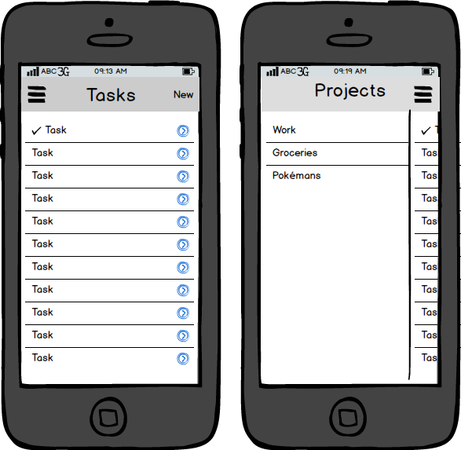

Starting your App
Now that we’ve got everything installed and a new Cordova project created, let’s jump in and start building a real app!
The Todo list app is pretty much a rite of passage for frameworks, so we will walk through the process of building one with Ionic.
Since every Ionic app is basically a web page, we need to have an index.html file in our app which defines the first page that loads in the app. Let’s create www/index.html and initialize it with this:
<!DOCTYPE html>
<html>
<head>
<meta charset="utf-8">
<title>Todo</title>
<meta name="viewport" content="initial-scale=1, maximum-scale=1, user-scalable=no, width=device-width">
<link href="lib/ionic/css/ionic.css" rel="stylesheet">
<script src="lib/ionic/js/ionic.bundle.js"></script>
<!-- Needed for Cordova/PhoneGap (will be a 404 during development) -->
<script src="cordova.js"></script>
</head>
<body>
</body>
</html>
In the shell above, we are including the Ionic CSS and both the core Ionic JS and the Ionic AngularJS extensions in the ionic.bundle.js file. Ionic comes with ngAnimate and ngSanitize bundled in, but to use other Angular modules you’ll need to include them from the lib/js/angular directory.
Also note that the cordova.js or phonegap.js file must be the last script, and that this file will not be found in your development files, but rather automatically included when running or emulating your app.
Now that we have our starting place, we need to figure out what the UI of the app will look like. We have a ton of choices when it comes to UI design on mobile. There are a few standard layouts, like tabs and side menus, but there are practically infinite custom layouts that we could implement if we really wanted to (which Ionic encourages!). For the sake of this example, we are going to pick a simple Side Menu layout which lets us drag and expose a side menu with center content.
In the center content area, we will list the various tasks that we have to get completed for the current project. We can add new tasks, or edit existing ones. If we drag the center content over to the right, we expose the left side menu which lets us choose the current project we want to edit, or create new projects. Take a look at the mockup below for an example of what we are trying to build:

To create side menus in Ionic, we can use ion-side-menus . Feel free to read up on it, but the markup needed is simple. Edit the index.html file and change the <body> content to look like this:
<body>
<ion-side-menus>
<ion-side-menu-content>
</ion-side-menu-content>
<ion-side-menu side="left">
</ion-side-menu>
</ion-side-menus>
</body>
In the code above, we’ve added our <ion-side-menus> controller which will handle the dragging and exposing of the side menu. Inside of the controller we have a <ion-side-menu-content> which is the center content area of the app, and a <ion-side-menu side="left"> which is a left, initially hidden, side menu.
Initializing the app
Now, if you run this code (more on testing in a bit), you wouldn’t see anything! There are two reasons for that: We haven’t created an AngularJS app to turn the custom tags (like <ion-side-menus> ) into anything functional, and we don’t have any content yet!
Let’s fix that. First, we need to create a new AngularJS module and tell Angular to initialize it. Let’s create a new file located at www/js/app.js . Put this code into the file:
angular.module('todo', ['ionic'])
This is the Angular way of creating an application, and we are telling angular to include the ionic module which includes all of the Ionic code which will process the tags above and make our app come to life.
Now, go back to index.html and right before the <script src="cordova.js"> </script"> line, add:
<script src="js/app.js"> </script>
This includes the script we just created.
And to make our new app run, we need to add the ng-app attribute to the body tag:
<body ng-app="todo">
Now, we still won’t see anything if we run the code, because we need to add some content to the application. Let’s go ahead and add a header for both the center content area and the left menu.
Update the body content to be:
<body ng-app="todo">
<ion-side-menus>
<!-- Center content -->
<ion-side-menu-content>
<ion-header-bar class="bar-dark">
<h1 class="title">Todo</h1>
</ion-header-bar>
<ion-content>
</ion-content>
</ion-side-menu-content>
<!-- Left menu -->
<ion-side-menu side="left">
<ion-header-bar class="bar-dark">
<h1 class="title">Projects</h1>
</ion-header-bar>
</ion-side-menu>
</ion-side-menus>
</body>